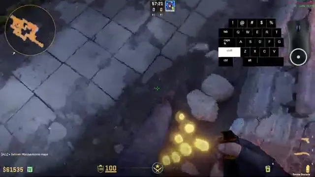
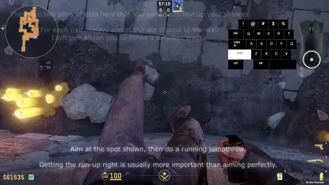
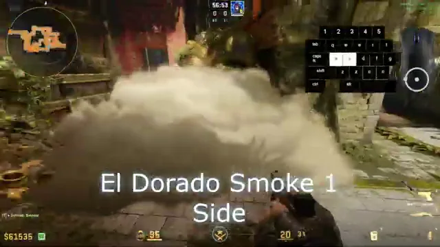
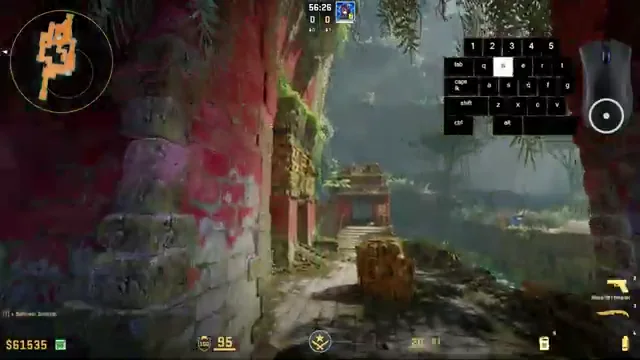
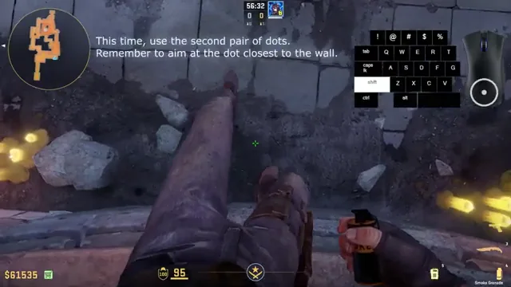
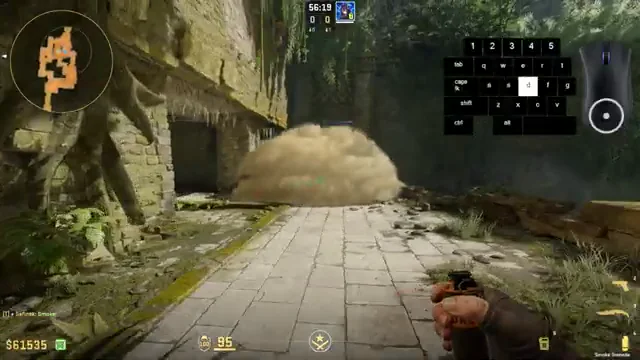
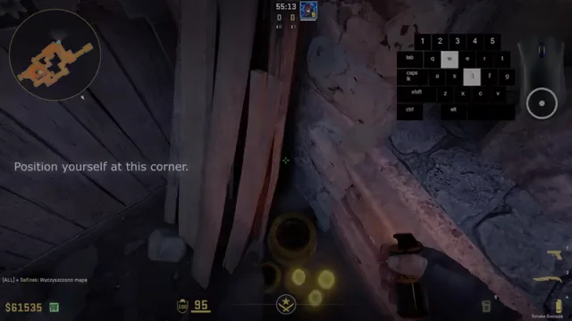
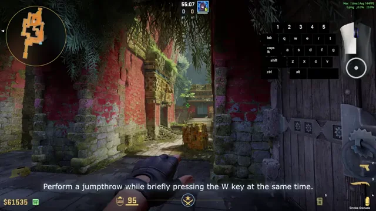
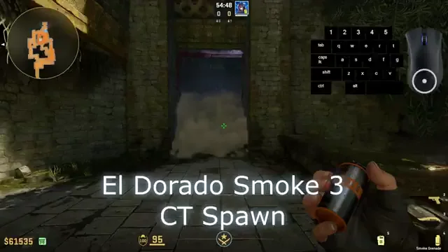

El Dorado
Обери гранату, щоб переглянути розкидки для цієї карти.Choose a grenade to browse lineups for this map.Elige una granada para ver los lanzamientos de este mapa.选择手雷查看此地图的投掷点位。इस मैप की लाइनअप देखने के लिए ग्रेनेड चुनें।Choisissez une grenade pour consulter les line-ups de cette carte.Escolha uma granada para ver os lineups deste mapa.اختر قنبلة لعرض تشكيلات هذه الخريطة.এই মানচিত্রের লাইনআপ দেখতে গ্রেনেড বেছে নিন।Pilih granat untuk melihat lineup peta ini.
Обери гранатуChoose a grenadeElige una granada选择手雷ग्रेनेड चुनेंChoisir une grenadeEscolha uma granadaاختر قنبلةগ্রেনেড বেছে নিনPilih granat
Натисни тип гранати, щоб побачити розкидки цієї карти. Натисни назву розкидки, щоб відкрити кроки та скриншоти.Choose a grenade to see lineups for this map. Select a lineup to view its steps and screenshots.Elige una granada para ver los lanzamientos de este mapa. Selecciona uno para ver los pasos y capturas.选择手雷类型查看此地图的投掷点位。点击名称查看步骤和截图。इस मैप की लाइनअप देखने के लिए ग्रेनेड चुनें। चरण और स्क्रीनशॉट देखने के लिए नाम चुनें।Choisissez une grenade pour voir les line-ups de cette carte. Sélectionnez un nom pour consulter les étapes et captures.Escolha uma granada para ver os lineups deste mapa. Selecione um nome para ver etapas e capturas.اختر نوع القنبلة لعرض التشكيلات على هذه الخريطة. اختر الاسم لعرض الخطوات ولقطات الشاشة.এই মানচিত্রের লাইনআপ দেখতে গ্রেনেড বেছে নিন। ধাপ ও স্ক্রিনশট দেখতে নাম নির্বাচন করুন।Pilih granat untuk melihat lineup peta ini. Pilih nama untuk melihat langkah dan tangkapan layar.
«Усі» об’єднує T і CT; непідтверджені розкидки теж залишаються тут.“All” includes T-side, CT-side and lineups with an unverified side.“Todos” incluye los lados T y CT, además de los lanzamientos sin lado confirmado.“全部”包括 T 方、CT 方和阵营未确认的投掷点位。“सभी” में T, CT और बिना पुष्टि वाले लाइनअप शामिल हैं।« Tous » inclut les côtés T et CT ainsi que les line-ups non confirmés.“Todos” inclui os lados T e CT e os lineups sem lado confirmado.يشمل «الكل» جهتي T وCT والتشكيلات التي لم يتم تأكيد جانبها.“সব”-এ T, CT এবং অনিশ্চিত পক্ষের লাইনআপ থাকে।“Semua” mencakup sisi T, CT, dan lineup yang sisinya belum dipastikan.
☁️ ДимоваSmokeHumo烟雾弹धुआँFumigèneFumaçaدخانধোঁয়াAsap
3Димова · El DoradoSmoke · El DoradoHumo · El Dorado烟雾弹 · El Doradoस्मोक · El DoradoFumigène · El DoradoFumaça · El Doradoدخان · El Doradoস্মোক · El DoradoAsap · El Doradoсторону не уточненоside not specifiedlado sin especificar未标注阵营पक्ष निर्दिष्ट नहींcôté non précisélado não especificadoالجانب غير محددপক্ষ উল্লেখ নেইsisi tidak ditentukan3 смоки: Side · CT Pillars · CT Spawn3 smokes: Side · CT Pillars · CT Spawn3 humos: Side · CT Pillars · CT Spawn3 颗烟雾弹：Side · CT Pillars · CT Spawn3 स्मोक: Side · CT Pillars · CT Spawn3 fumigènes : Side · CT Pillars · CT Spawn3 fumaças: Side · CT Pillars · CT Spawn3 دخان: Side · CT Pillars · CT Spawn৩টি স্মোক: Side · CT Pillars · CT Spawn3 smoke: Side · CT Pillars · CT Spawn
Цілі: Side, CT Pillars і CT Spawn.
Позиція та приціл: нижче окремо показані позиція, точка прицілу й приземлення для кожного з трьох кидків.
Targets: Side, CT Pillars and CT Spawn.
Position and aim: below, each throw has separate position, aim-point and landing screenshots.
Objetivos: Side, CT Pillars y CT Spawn.
Posición y mira: abajo hay capturas separadas de la posición, el punto de mira y el resultado de cada lanzamiento.
目标：Side、CT Pillars 和 CT Spawn。
站位与瞄准：下方分别展示了三次投掷的站位、瞄准点和落点截图。
लक्ष्य: Side, CT Pillars और CT Spawn.
पोज़िशन और निशाना: नीचे तीनों थ्रो के लिए स्थिति, निशाने और लैंडिंग के अलग स्क्रीनशॉट हैं।
Cibles : Side, CT Pillars et CT Spawn.
Position et visée : ci-dessous, chaque lancer a des captures distinctes de la position, du point visé et de l’arrivée.
Alvos: Side, CT Pillars e CT Spawn.
Posição e mira: abaixo há capturas separadas da posição, do ponto de mira e da queda para cada arremesso.
الأهداف: Side وCT Pillars وCT Spawn.
الموقع والتصويب: توجد أدناه لقطات منفصلة للموقع ونقطة التصويب والهبوط لكل رمية.
লক্ষ্য: Side, CT Pillars এবং CT Spawn।
অবস্থান ও লক্ষ্যভেদ: নিচে প্রতিটি থ্রোর অবস্থান, লক্ষ্যবিন্দু ও পতনের আলাদা স্ক্রিনশট আছে।
Target: Side, CT Pillars, dan CT Spawn.
Posisi dan bidikan: di bawah ada tangkapan layar posisi, titik bidik, dan hasil untuk masing-masing lemparan.









🔥 МолотовMolotovMolotov燃烧瓶मोलोटोवMolotovMolotovمولوتوفমলোটভMolotov
0Для цієї карти поки не знайшов перевірених інструкцій і скриншотів.No verified instructions and screenshots are available for this map yet.Aún no hay instrucciones y capturas verificadas para este mapa.此地图暂时没有经过核实的说明和截图。इस मैप के लिए अभी सत्यापित निर्देश और स्क्रीनशॉट उपलब्ध नहीं हैं।Aucune instruction ni capture vérifiée n’est encore disponible pour cette carte.Ainda não há instruções e capturas verificadas para este mapa.لا تتوفر بعد تعليمات ولقطات شاشة موثقة لهذه الخريطة.এই মানচিত্রের জন্য এখনো যাচাই করা নির্দেশনা ও স্ক্রিনশট নেই।Belum ada instruksi dan tangkapan layar terverifikasi untuk peta ini.
⚡ СвітловаFlashFlash闪光弹फ्लैशFlashFlashوميضফ্ল্যাশFlash
0Для цієї карти поки не знайшов перевірених інструкцій і скриншотів.No verified instructions and screenshots are available for this map yet.Aún no hay instrucciones y capturas verificadas para este mapa.此地图暂时没有经过核实的说明和截图。इस मैप के लिए अभी सत्यापित निर्देश और स्क्रीनशॉट उपलब्ध नहीं हैं।Aucune instruction ni capture vérifiée n’est encore disponible pour cette carte.Ainda não há instruções e capturas verificadas para este mapa.لا تتوفر بعد تعليمات ولقطات شاشة موثقة لهذه الخريطة.এই মানচিত্রের জন্য এখনো যাচাই করা নির্দেশনা ও স্ক্রিনশট নেই।Belum ada instruksi dan tangkapan layar terverifikasi untuk peta ini.
💥 HE-гранатаHE grenadeGranada HEHE 手雷HE ग्रेनेडGrenade HEGranada HEقنبلة HEHE গ্রেনেডGranat HE
0Для цієї карти поки не знайшов перевірених інструкцій і скриншотів.No verified instructions and screenshots are available for this map yet.Aún no hay instrucciones y capturas verificadas para este mapa.此地图暂时没有经过核实的说明和截图。इस मैप के लिए अभी सत्यापित निर्देश और स्क्रीनशॉट उपलब्ध नहीं हैं।Aucune instruction ni capture vérifiée n’est encore disponible pour cette carte.Ainda não há instruções e capturas verificadas para este mapa.لا تتوفر بعد تعليمات ولقطات شاشة موثقة لهذه الخريطة.এই মানচিত্রের জন্য এখনো যাচাই করা নির্দেশনা ও স্ক্রিনশট নেই।Belum ada instruksi dan tangkapan layar terverifikasi untuk peta ini.
🎭 ДекойDecoySeñuelo诱饵弹डिकॉयLeurreIscaخداعডেকয়Decoy
0Для цієї карти поки не знайшов перевірених інструкцій і скриншотів.No verified instructions and screenshots are available for this map yet.Aún no hay instrucciones y capturas verificadas para este mapa.此地图暂时没有经过核实的说明和截图。इस मैप के लिए अभी सत्यापित निर्देश और स्क्रीनशॉट उपलब्ध नहीं हैं।Aucune instruction ni capture vérifiée n’est encore disponible pour cette carte.Ainda não há instruções e capturas verificadas para este mapa.لا تتوفر بعد تعليمات ولقطات شاشة موثقة لهذه الخريطة.এই মানচিত্রের জন্য এখনো যাচাই করা নির্দেশনা ও স্ক্রিনশট নেই।Belum ada instruksi dan tangkapan layar terverifikasi untuk peta ini.